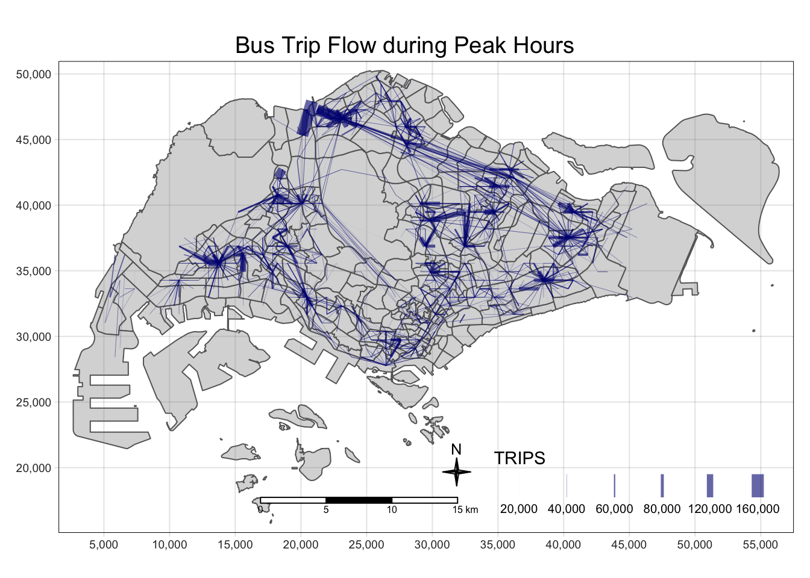
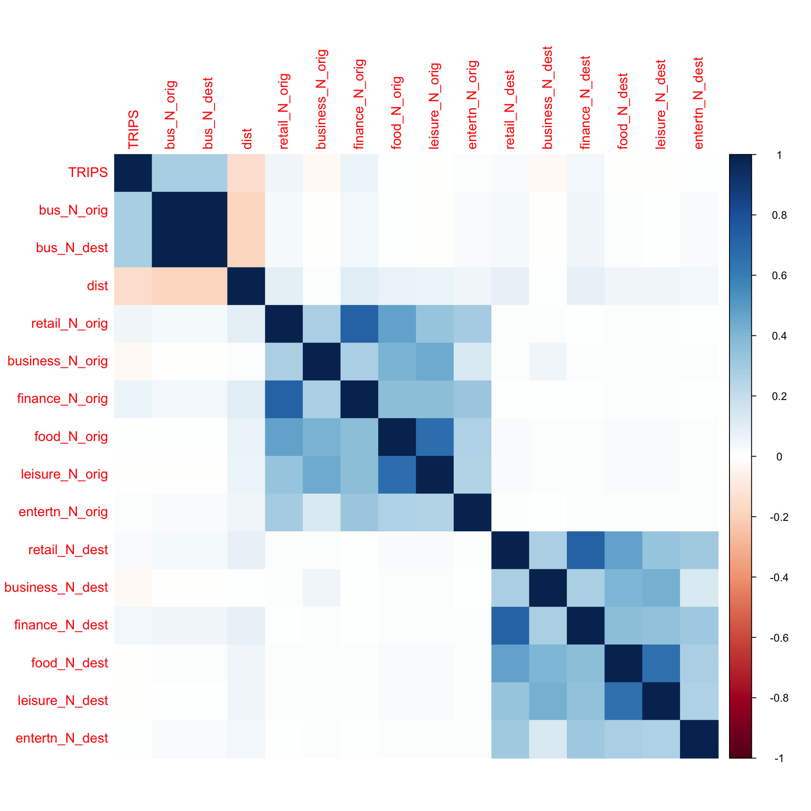
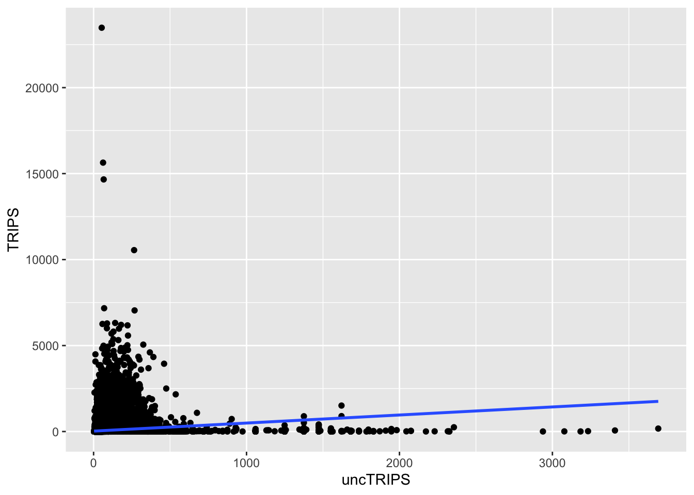

Code
pacman::p_load(sf, sp, spdep, tmap, tidyverse, sfdep, stplanr, corrplot, ggplot2)What are the driving forces behind urban dwellers to weak up early in morning to commute from their home locations to their work places? What are the impact of removing a public bus service on the commuters reside along the corridor of the bus route? These and many other questions related to urban mobility are challenges faced by transport operators and urban managers.
To provide answer to this question, traditionally, commuters survey will be used. However, commuters survey is a very costly, time-consuming and laborous, not to mention that the survey data tend to take a long time to clean and analyse. As a result, it is not unusual, by the time the survey report was ready, most of the information already out-of-date!
As city-wide urban infrastructures such as public buses, mass rapid transits, public utilities and roads become digital, the data sets obtained can be used as a framework for tracking movement patterns through space and time. This is particularly true with the recent trend of massive deployment of pervasive computing technologies such as GPS on the vehicles and SMART cards used by public transport commuters.
Unfortunately, this explosive growth of geospatially-referenced data has far outpaced the planner’s ability to utilize and transform the data into insightful information thus creating an adverse impact on the return on the investment made to collect and manage this data.
This take-home exercise is motivated by two main reasons. Firstly, despite increasing amounts of open data available for public consumption, there has not been significant practice research carried out to show how these disparate data sources can be integrated, analysed, and modelled to support policy making decisions.
Secondly, there is a general lack of practical research to show how geospatial data science and analysis (GDSA) can be used to support decision-making.
Hence, your task for this take-home exercise is to conduct a case study to demonstrate the potential value of GDSA to integrate publicly available data from multiple sources for building a spatial interaction models to determine factors affecting urban mobility patterns of public bus transit.
For the purpose of this assignment, data from several open government sources will be used:
Passenger Volume by Origin Destination Bus Stops, Bus Stop Location, Train Station and Train Station Exit Point, just to name a few of them, from LTA DataMall.
Master Plan 2019 Subzone Boundary, HDB Property Information, School Directory and Information and other relevant data from Data.gov.sg.
Those specially collected data aim to use within this excercise content only, if intend to put in other usage, approach course instructor Dr. Kam Tin Seong and ask for permission first.
For starting, load needing packages.
pacman::p_load(sf, sp, spdep, tmap, tidyverse, sfdep, stplanr, corrplot, ggplot2)Derive an analytical hexagon data of 375m (this distance is the perpendicular distance between the centre of the hexagon and its edges) to represent the traffic analysis zone (TAZ).
First of all, we need to import Bus Stop Location from LTA DataMall.
busstop = st_read(dsn = "./data/geospatial/BusStopLocation_Jul2023",
layer = "BusStop") %>% st_transform(crs = 3414) %>%
distinct(BUS_STOP_N, .keep_all = TRUE)Reading layer `BusStop' from data source
`/Users/SMU/liangyao2023/ISSS624/Takehome_Ex/Takehome_Ex02/data/geospatial/BusStopLocation_Jul2023'
using driver `ESRI Shapefile'
Simple feature collection with 5161 features and 3 fields
Geometry type: POINT
Dimension: XY
Bounding box: xmin: 3970.122 ymin: 26482.1 xmax: 48284.56 ymax: 52983.82
Projected CRS: SVY21Also import subzone geometry data as our background layer.
sz = st_read(dsn = "./data/geospatial",
layer = "MPSZ-2019") %>% st_transform(crs = 3414) Reading layer `MPSZ-2019' from data source
`/Users/SMU/liangyao2023/ISSS624/Takehome_Ex/Takehome_Ex02/data/geospatial'
using driver `ESRI Shapefile'
Simple feature collection with 332 features and 6 fields
Geometry type: MULTIPOLYGON
Dimension: XY
Bounding box: xmin: 103.6057 ymin: 1.158699 xmax: 104.0885 ymax: 1.470775
Geodetic CRS: WGS 84Then we can Derive an analytical hexagon data of 375m.
hexagon <- st_sf(geometry = st_make_grid(busstop, cellsize = c(375,375), what = "polygons",square = FALSE)) %>%
mutate(id = as.character(row_number())) %>%
st_transform(crs = 3414)
hexagon <- hexagon %>%
mutate(N = lengths(st_intersects(hexagon, busstop))) %>%
filter(N>0)
hexagonSimple feature collection with 2174 features and 2 fields
Geometry type: POLYGON
Dimension: XY
Bounding box: xmin: 3595.122 ymin: 26265.59 xmax: 48595.12 ymax: 53328.89
Projected CRS: SVY21 / Singapore TM
First 10 features:
geometry id N
1 POLYGON ((3782.622 27889.39... 3 1
2 POLYGON ((4157.622 27889.39... 86 1
3 POLYGON ((4532.622 28538.91... 170 1
4 POLYGON ((4532.622 30487.47... 173 1
5 POLYGON ((4532.622 31136.99... 174 1
6 POLYGON ((4720.122 28214.15... 211 1
7 POLYGON ((4720.122 30162.71... 214 1
8 POLYGON ((4907.622 29837.95... 255 2
9 POLYGON ((4907.622 31786.51... 258 1
10 POLYGON ((5095.122 28863.67... 295 1Plot out our bus_hex to check.
tm_shape(sz) +
tm_polygons(alpha = 0.3) +
tm_borders(alpha = 0.2) +
tm_shape(hexagon %>% filter(N>0)) +
tm_fill("N",
style = "quantile",
palette = "Blues",
title = "Bus stop counts",
colorNA = NULL,
showNA = FALSE) +
tm_layout(main.title = "Count of Bus Stops at Hexagon Level",
main.title.position = "center",
main.title.size = 1.2,
legend.height = 0.45,
legend.width = 0.35,
frame = TRUE) +
tm_compass(type="4star", size = 1.5) +
tm_borders(alpha = 0.5) +
tm_scale_bar() +
tm_grid(alpha =0.2)Then we can join bus stop with hexagon, and join with subzone to exclude hexagons out of range.
bus_hex <- st_join(
st_join(hexagon, busstop%>%select(BUS_STOP_N,geometry), join = st_intersects),
sz) %>%
drop_na() %>%
distinct(BUS_STOP_N, .keep_all = TRUE)
summary(bus_hex) id N BUS_STOP_N SUBZONE_N
Length:5140 Min. : 1.000 Length:5140 Length:5140
Class :character 1st Qu.: 2.000 Class :character Class :character
Mode :character Median : 3.000 Mode :character Mode :character
Mean : 3.009
3rd Qu.: 4.000
Max. :10.000
SUBZONE_C PLN_AREA_N PLN_AREA_C REGION_N
Length:5140 Length:5140 Length:5140 Length:5140
Class :character Class :character Class :character Class :character
Mode :character Mode :character Mode :character Mode :character
REGION_C geometry
Length:5140 POLYGON :5140
Class :character epsg:3414 : 0
Mode :character +proj=tmer...: 0
Then we can save data to rds file.
write_rds(bus_hex, "./data/rds/bus_hex.rds")With reference to the time intervals provided in the table below, construct an O-D matrix of commuter flows for a time interval of your choice by integrating Passenger Volume by Origin Destination Bus Stops and Bus Stop Location from LTA DataMall. The O-D matrix must be aggregated at the analytics hexagon level
| Peak hour period | Bus tap on time |
|---|---|
| Weekday morning peak | 6am to 9am |
| Weekday afternoon peak | 5pm to 8pm |
| Weekend/holiday morning peak | 11am to 2pm |
| Weekend/holiday evening peak | 4pm to 7pm |
Import bus passenger trips data.
odbus = read_csv("./data/aspatial/origin_destination_bus_202310.csv") %>%
mutate(ORIGIN_PT_CODE = as.factor(ORIGIN_PT_CODE),
DESTINATION_PT_CODE = as.factor(DESTINATION_PT_CODE))Extract passenger trips data during all peak time intervals.
peak_trips <- bind_rows(
odbus %>%
filter(DAY_TYPE == "WEEKDAY") %>%
filter(TIME_PER_HOUR >= 6 &
TIME_PER_HOUR <= 9) %>%
mutate(interval = "weekdayam"),
odbus %>%
filter(DAY_TYPE == "WEEKDAY") %>%
filter(TIME_PER_HOUR >= 17 &
TIME_PER_HOUR <= 20) %>%
mutate(interval = "weekdaypm"),
odbus %>%
filter(DAY_TYPE == "WEEKENDS/HOLIDAY") %>%
filter(TIME_PER_HOUR >= 11 &
TIME_PER_HOUR <= 14) %>%
mutate(interval = "weekendam"),
odbus %>%
filter(DAY_TYPE == "WEEKENDS/HOLIDAY") %>%
filter(TIME_PER_HOUR >= 16 &
TIME_PER_HOUR <= 19) %>%
mutate(interval = "weekendpm")) %>%
group_by(ORIGIN_PT_CODE, DESTINATION_PT_CODE, interval) %>%
reframe(TRIPS = sum(TOTAL_TRIPS)) Check any bus stops not in our origin ‘bus_hex’ list.
peak_trips %>%
filter(! ORIGIN_PT_CODE %in% bus_hex$'BUS_STOP_N') %>%
group_by(ORIGIN_PT_CODE) %>%
reframe(TRIPS = sum(TRIPS))Exclude any bus stops not included in ‘bus_hex’ data before continue.
peak_trips <- peak_trips %>%
filter(ORIGIN_PT_CODE %in% bus_hex$'BUS_STOP_N') %>%
filter(DESTINATION_PT_CODE %in% bus_hex$'BUS_STOP_N')Duplication check before continue.
peak_trips %>%
group_by_all() %>%
filter(n()>1) %>%
ungroup()After that, we need to combine those passenger trip data with geospatial data by origin bus stops.
peaktrip_hex <- left_join(peak_trips %>%
group_by(ORIGIN_PT_CODE, DESTINATION_PT_CODE) %>%
reframe(TRIPS = sum(TRIPS)),
bus_hex %>% select(id, BUS_STOP_N, geometry),
by = c("ORIGIN_PT_CODE" = "BUS_STOP_N")) %>%
rename(ORIGIN_BS = ORIGIN_PT_CODE,
DESTIN_BS = DESTINATION_PT_CODE) Duplication check before continue:
peaktrip_hex %>%
group_by_all() %>%
filter(n()>1) %>%
ungroup()Then we can continue to join again with geospatial data by destination bus stops.
peaktrip_hex <- left_join(peaktrip_hex, bus_hex %>% select(id, BUS_STOP_N, geometry),
by = c("DESTIN_BS" = "BUS_STOP_N"),
suffix = c(".origin", ".destin")) Duplication check again.
peaktrip_hex %>%
group_by_all() %>%
filter(n()>1) %>%
ungroup()Display the O-D flows of the passenger trips by using appropriate geovisualisation methods.
First we need to make sure the trips data group by hexagon ids.
peaktrip_hex <- peaktrip_hex %>%
group_by(id.origin, id.destin, geometry.origin, geometry.destin) %>%
reframe(TRIPS = sum(TRIPS),
bus_N_orig = length(ORIGIN_BS),
bus_N_dest = length(DESTIN_BS))Then we can create flow lines and check summary of data in case there are any zero.
peaktrip_flow <- od2line(flow = peaktrip_hex,
zones = hexagon,
zone_code = "id")We can save the output into a rds file.
write_rds(peaktrip_flow, "./data/rds/peaktrip_flow.rds")Read from peaktrip_hex from file.
peaktrip_flow <- read_rds("./data/rds/peaktrip_flow.rds")
summary(peaktrip_flow) id.origin id.destin geometry.origin
Length:214470 Length:214470 POLYGON :214470
Class :character Class :character epsg:3414 : 0
Mode :character Mode :character +proj=tmer...: 0
geometry.destin TRIPS bus_N_orig bus_N_dest
POLYGON :214470 Min. : 1.0 Min. : 1.000 Min. : 1.000
epsg:3414 : 0 1st Qu.: 8.0 1st Qu.: 1.000 1st Qu.: 1.000
+proj=tmer...: 0 Median : 37.0 Median : 1.000 Median : 1.000
Mean : 299.3 Mean : 1.431 Mean : 1.431
3rd Qu.: 155.0 3rd Qu.: 2.000 3rd Qu.: 2.000
Max. :153711.0 Max. :22.000 Max. :22.000
geometry
LINESTRING :214470
epsg:3414 : 0
+proj=tmer...: 0
Till now, we can plot out the bus trip flow during all 4 peak time intervals in total.
tm_shape(sz) +
tmap_options(check.and.fix = TRUE) +
tm_polygons() +
peaktrip_flow %>%
filter(TRIPS >= 3000) %>%
tm_shape() +
tm_lines(lwd = "TRIPS",
style = "quantile",
scale = c(0.1, 1, 3, 5, 7, 10),
n = 6,
col = "navy",
alpha = 0.6)
And we can visualize 4 peak time intervals in facets style to check any difference within.
First need to wrangling the data to put trips data of different time intervals into different columns.
peak_interval_trips <- peak_trips %>%
pivot_wider(names_from = interval,
values_from = TRIPS,
values_fill = 0)
peak_interval_hex <- left_join(peak_interval_trips,
bus_hex %>% select(id,BUS_STOP_N, geometry),
by = c("ORIGIN_PT_CODE" = "BUS_STOP_N")) %>%
rename(ORIGIN_BS = ORIGIN_PT_CODE,
DESTIN_BS = DESTINATION_PT_CODE)
peak_interval_hex <- left_join(peak_interval_hex, bus_hex %>% select(id,BUS_STOP_N, geometry),
by = c("DESTIN_BS" = "BUS_STOP_N"),
suffix = c(".origin", ".destin")) Before we can continue, group the trip data by hexagon id.
peak_interval_hex <- peak_interval_hex %>%
group_by(id.origin, id.destin, geometry.origin, geometry.destin) %>%
reframe(weekdayam = sum(weekdayam),
weekdaypm = sum(weekdaypm),
weekendam = sum(weekendam),
weekendpm = sum(weekendpm),
bus_N_orig = length(ORIGIN_BS),
bus_N_dest = length(DESTIN_BS))Then we can create flow lines.
peak_interval_flow <- od2line(flow = peak_interval_hex,
zones = hexagon,
zone_code = "id")Save data to rds file.
write_rds(peak_interval_flow, "./data/rds/peak_interval_flow.rds")Read data from file.
peak_interval_flow <- read_rds("./data/rds/peak_interval_flow.rds")
summary(peak_interval_flow) id.origin id.destin geometry.origin
Length:214470 Length:214470 POLYGON :214470
Class :character Class :character epsg:3414 : 0
Mode :character Mode :character +proj=tmer...: 0
geometry.destin weekdayam weekdaypm weekendam
POLYGON :214470 Min. : 0.0 Min. : 0.0 Min. : 0.00
epsg:3414 : 0 1st Qu.: 1.0 1st Qu.: 2.0 1st Qu.: 0.00
+proj=tmer...: 0 Median : 9.0 Median : 11.0 Median : 4.00
Mean : 117.7 Mean : 112.4 Mean : 34.57
3rd Qu.: 52.0 3rd Qu.: 52.0 3rd Qu.: 16.00
Max. :74796.0 Max. :73720.0 Max. :16579.00
weekendpm bus_N_orig bus_N_dest geometry
Min. : 0.00 Min. : 1.000 Min. : 1.000 LINESTRING :214470
1st Qu.: 1.00 1st Qu.: 1.000 1st Qu.: 1.000 epsg:3414 : 0
Median : 4.00 Median : 1.000 Median : 1.000 +proj=tmer...: 0
Mean : 34.68 Mean : 1.431 Mean : 1.431
3rd Qu.: 17.00 3rd Qu.: 2.000 3rd Qu.: 2.000
Max. :23484.00 Max. :22.000 Max. :22.000 Then we can plot out 4 peak intervals in facets.
tmap_arrange(
tm_shape(sz) +
tmap_options(check.and.fix = TRUE) +
tm_polygons() +
peak_interval_flow %>%
filter(weekdayam >= 5000) %>%
tm_shape() +
tm_lines(lwd = "weekdayam",
style = "quantile",
scale = c(0.1, 1, 3, 5, 7, 10),
n = 6,
col = "darkgreen",
alpha = 0.6) +
tm_layout(main.title = "Trips during Weekday 6am till 9am",
main.title.size = 1.2),
tm_shape(sz) +
tmap_options(check.and.fix = TRUE) +
tm_polygons() +
peak_interval_flow %>%
filter(weekdaypm >= 5000) %>%
tm_shape() +
tm_lines(lwd = "weekdaypm",
style = "quantile",
scale = c(0.1, 1, 3, 5, 7, 10),
n = 6,
col = "darkgreen",
alpha = 0.6) +
tm_layout(main.title = "Trips during Weekday 5pm till 8pm",
main.title.size = 1.2),
tm_shape(sz) +
tmap_options(check.and.fix = TRUE) +
tm_polygons() +
peak_interval_flow %>%
filter(weekendam >= 2000) %>%
tm_shape() +
tm_lines(lwd = "weekendam",
style = "quantile",
scale = c(0.1, 1, 3, 5, 7, 10),
n = 6,
col = "navy",
alpha = 0.6) +
tm_layout(main.title = "Trips during Weekend/Holiday 11am till 2pm",
main.title.size = 1.2),
tm_shape(sz) +
tmap_options(check.and.fix = TRUE) +
tm_polygons() +
peak_interval_flow %>%
filter(weekendpm >= 2000) %>%
tm_shape() +
tm_lines(lwd = "weekendpm",
style = "quantile",
scale = c(0.1, 1, 3, 5, 7, 10),
n = 6,
col = "navy",
alpha = 0.8) +
tm_layout(main.title = "Trips during Weekend/Holiday 4pm till 7pm",
main.title.size = 1.2),
asp=1, ncol=2,
outer.margins = 0)Observations:
The heavy traffic lines are similar during weekdays no matter morning or evening peak time, and the locations are reconcile with those hexagons which are condensed with count of bus stops.
The flow lines between Woodlands and Tampines are the common busy lines during all peak hours no matter weekdays or weekends.
Trip flow during weekend/holiday afternoon peak hours is most disperse.
Firstly import all those propulsive and Attractiveness variables.
business = st_read(dsn = "./data/geospatial",
layer = "Business") %>% st_transform(crs = 3414)
entertn = st_read(dsn = "./data/geospatial",
layer = "entertn") %>% st_transform(crs = 3414)
food = st_read(dsn = "./data/geospatial",
layer = "F&B") %>% st_transform(crs = 3414)
finance = st_read(dsn = "./data/geospatial",
layer = "FinServ") %>% st_transform(crs = 3414)
leisure = st_read(dsn = "./data/geospatial",
layer = "Leisure&Recreation") %>% st_transform(crs = 3414)
retail = st_read(dsn = "./data/geospatial",
layer = "Retails") %>% st_transform(crs = 3414) Then we can assemble all those variables with our hexagon.
bus_var <- hexagon %>%
select(id, geometry) %>%
mutate(retail_N = lengths(st_intersects(hexagon, retail)),
business_N = lengths(st_intersects(hexagon, business)),
finance_N = lengths(st_intersects(hexagon, finance)),
food_N = lengths(st_intersects(hexagon, food)),
leisure_N = lengths(st_intersects(hexagon, leisure)),
entertn_N = lengths(st_intersects(hexagon, entertn))) %>%
mutate(retail_N = ifelse(retail_N>0, retail_N, 0.01),
business_N = ifelse(business_N>0, business_N, 0.01),
finance_N = ifelse(finance_N>0, finance_N, 0.01),
food_N = ifelse(food_N>0, food_N, 0.01),
leisure_N = ifelse(leisure_N>0, leisure_N, 0.01),
entertn_N = ifelse(entertn_N>0, entertn_N, 0.01))Here we use length of intersect between the geometry of variables and hexagons as count of variables.
We need to treat any case of 0, give it a constant 0.1 for further model fitting.
First we need to convert the bus_hex we have generated into Spatial Polygons Data Frame.
bus_sp <- as(hexagon, "Spatial")
bus_spThen we can compute distance matrix of our bus stops hexagons and give names to columns and rows of the matrix.
dist <- spDists(bus_sp,
longlat = FALSE)
hex_id <- bus_sp$id
colnames(dist) <- paste0(hex_id)
rownames(dist) <- paste0(hex_id)Then we can label the bus stops and convert it to pair-distance.
distPair <- as.data.frame(as.table(dist))
names(distPair) <- c("orig", "dest", "dist")
distPair <- distPair %>%
filter(orig != dest)Check any case of 0 distance, but there shouldn’t be any case of 0 since we are using hexagon with set cellsize of 375m.
distPair %>%
filter(dist == 0)For this part, I will focus on weekend/holiday evening peak time interval for further analysis.
weekendpm_trips <- odbus %>%
filter(DAY_TYPE == "WEEKENDS/HOLIDAY") %>%
filter(TIME_PER_HOUR >= 16 &
TIME_PER_HOUR <= 19) %>%
group_by(ORIGIN_PT_CODE, DESTINATION_PT_CODE) %>%
reframe(TRIPS = sum(TOTAL_TRIPS))
weekendpm_trips <- weekendpm_trips %>%
filter(ORIGIN_PT_CODE %in% bus_hex$'BUS_STOP_N') %>%
filter(DESTINATION_PT_CODE %in% bus_hex$'BUS_STOP_N')
weekendpm_hex <- left_join(weekendpm_trips,bus_hex %>% select(id, BUS_STOP_N, geometry),
by = c("ORIGIN_PT_CODE" = "BUS_STOP_N")) %>%
rename(ORIGIN_BS = ORIGIN_PT_CODE,
DESTIN_BS = DESTINATION_PT_CODE)
weekendpm_hex <- left_join(weekendpm_hex, bus_hex %>% select(id, BUS_STOP_N, geometry),
by = c("DESTIN_BS" = "BUS_STOP_N"),
suffix = c(".origin", ".destin"))
weekendpm_hex <- weekendpm_hex %>%
group_by(id.origin, id.destin, geometry.origin, geometry.destin) %>%
reframe(TRIPS = sum(TRIPS),
bus_N_orig = length(ORIGIN_BS),
bus_N_dest = length(DESTIN_BS))Create flow lines for those trips data.
weekendpm_flow <- od2line(flow = weekendpm_hex,
zones = hexagon,
zone_code = "id") Then we can save the data to rds file.
write_rds(weekendpm_flow, "./data/rds/weekendpm_flow.rds")Read the data from file.
weekendpm_flow <- read_rds("./data/rds/weekendpm_flow.rds")
summary(weekendpm_flow) id.origin id.destin geometry.origin
Length:161443 Length:161443 POLYGON :161443
Class :character Class :character epsg:3414 : 0
Mode :character Mode :character +proj=tmer...: 0
geometry.destin TRIPS bus_N_orig bus_N_dest
POLYGON :161443 Min. : 1.00 Min. : 1.000 Min. : 1.000
epsg:3414 : 0 1st Qu.: 3.00 1st Qu.: 1.000 1st Qu.: 1.000
+proj=tmer...: 0 Median : 8.00 Median : 1.000 Median : 1.000
Mean : 46.08 Mean : 1.353 Mean : 1.353
3rd Qu.: 26.00 3rd Qu.: 2.000 3rd Qu.: 2.000
Max. :23484.00 Max. :19.000 Max. :19.000
geometry
LINESTRING :161443
epsg:3414 : 0
+proj=tmer...: 0
Noted there are intra-hexagon trips.
weekendpm_flow %>%
filter(id.origin == id.destin)Simple feature collection with 630 features and 5 fields
Active geometry column: geometry
Geometry type: LINESTRING
Dimension: XY
Bounding box: xmin: 5095.122 ymin: 27781.14 xmax: 46345.12 ymax: 49864.79
Projected CRS: SVY21 / Singapore TM
First 10 features:
id.origin id.destin geometry.origin
1 1211 1211 POLYGON ((9220.122 30812.23...
2 1544 1544 POLYGON ((10720.12 31461.75...
3 1548 1548 POLYGON ((10720.12 34059.82...
4 1593 1593 POLYGON ((10907.62 36333.14...
5 1718 1718 POLYGON ((11470.12 36657.9,...
6 1760 1760 POLYGON ((11657.62 36982.66...
7 1800 1800 POLYGON ((11845.12 36008.38...
8 1841 1841 POLYGON ((12032.62 35683.62...
9 1923 1923 POLYGON ((12407.62 35034.1,...
10 1924 1924 POLYGON ((12407.62 35683.62...
geometry.destin TRIPS bus_N_orig bus_N_dest
1 POLYGON ((9220.122 30812.23... 1 1 1
2 POLYGON ((10720.12 31461.75... 1 1 1
3 POLYGON ((10720.12 34059.82... 4 2 2
4 POLYGON ((10907.62 36333.14... 1 1 1
5 POLYGON ((11470.12 36657.9,... 3 1 1
6 POLYGON ((11657.62 36982.66... 5 1 1
7 POLYGON ((11845.12 36008.38... 4 1 1
8 POLYGON ((12032.62 35683.62... 127 7 7
9 POLYGON ((12407.62 35034.1,... 1 1 1
10 POLYGON ((12407.62 35683.62... 5 2 2
geometry
1 LINESTRING (9220.122 31028....
2 LINESTRING (10720.12 31678....
3 LINESTRING (10720.12 34276....
4 LINESTRING (10907.62 36549....
5 LINESTRING (11470.12 36874....
6 LINESTRING (11657.62 37199....
7 LINESTRING (11845.12 36224....
8 LINESTRING (12032.62 35900....
9 LINESTRING (12407.62 35250....
10 LINESTRING (12407.62 35900....Then we can join the flow data with pairwise distance.
weekendpm_dist <- weekendpm_flow %>%
left_join (distPair,
by = c("id.origin" = "orig",
"id.destin" = "dest"))Till now we can join the flow data with all 6 propulsive and Attractiveness variables by both origin and destination hexagons. Replace any intra-hexagon distance by 50m.
weekendpm_SIM <- weekendpm_dist %>%
left_join(as.data.frame(bus_var) %>% select(-geometry),
by = c("id.origin"="id")) %>%
left_join(as.data.frame(bus_var) %>% select(-geometry),
by = c("id.destin"="id"),
suffix = c("_orig", "_dest")) %>%
mutate(dist = replace_na(dist, 50))
#weekendpm_SIM[is.na(weekendpm_SIM)] <- 0.1Then we can save the data to rds file.
write_rds(weekendpm_SIM, "./data/rds/weekendpm_SIM.rds")Read the data from file.
weekendpm_SIM <- read_rds("./data/rds/weekendpm_SIM.rds")
summary(weekendpm_SIM) id.origin id.destin TRIPS bus_N_orig
Length:161443 Length:161443 Min. : 1.00 Min. : 1.000
Class :character Class :character 1st Qu.: 3.00 1st Qu.: 1.000
Mode :character Mode :character Median : 8.00 Median : 1.000
Mean : 46.08 Mean : 1.353
3rd Qu.: 26.00 3rd Qu.: 2.000
Max. :23484.00 Max. :19.000
bus_N_dest dist retail_N_orig business_N_orig
Min. : 1.000 Min. : 50 Min. : 0.01 Min. : 0.010
1st Qu.: 1.000 1st Qu.: 2088 1st Qu.: 1.00 1st Qu.: 0.010
Median : 1.000 Median : 4226 Median : 6.00 Median : 0.010
Mean : 1.353 Mean : 5229 Mean : 34.96 Mean : 1.797
3rd Qu.: 2.000 3rd Qu.: 7387 3rd Qu.: 25.00 3rd Qu.: 1.000
Max. :19.000 Max. :24827 Max. :987.00 Max. :44.000
finance_N_orig food_N_orig leisure_N_orig entertn_N_orig
Min. : 0.010 Min. : 0.010 Min. : 0.0100 Min. :0.0100
1st Qu.: 0.010 1st Qu.: 0.010 1st Qu.: 0.0100 1st Qu.:0.0100
Median : 1.000 Median : 0.010 Median : 0.0100 Median :0.0100
Mean : 3.219 Mean : 1.973 Mean : 0.7064 Mean :0.1208
3rd Qu.: 3.000 3rd Qu.: 1.000 3rd Qu.: 1.0000 3rd Qu.:0.0100
Max. :76.000 Max. :81.000 Max. :23.0000 Max. :7.0000
retail_N_dest business_N_dest finance_N_dest food_N_dest
Min. : 0.01 Min. : 0.010 Min. : 0.010 Min. : 0.010
1st Qu.: 1.00 1st Qu.: 0.010 1st Qu.: 0.010 1st Qu.: 0.010
Median : 6.00 Median : 0.010 Median : 1.000 Median : 0.010
Mean : 34.12 Mean : 1.739 Mean : 3.176 Mean : 1.907
3rd Qu.: 25.00 3rd Qu.: 1.000 3rd Qu.: 3.000 3rd Qu.: 1.000
Max. :987.00 Max. :44.000 Max. :76.000 Max. :81.000
leisure_N_dest entertn_N_dest geometry.origin
Min. : 0.0100 Min. :0.0100 POLYGON :161443
1st Qu.: 0.0100 1st Qu.:0.0100 epsg:3414 : 0
Median : 0.0100 Median :0.0100 +proj=tmer...: 0
Mean : 0.6919 Mean :0.1177
3rd Qu.: 1.0000 3rd Qu.:0.0100
Max. :23.0000 Max. :7.0000
geometry.destin geometry
POLYGON :161443 LINESTRING :161443
epsg:3414 : 0 epsg:3414 : 0
+proj=tmer...: 0 +proj=tmer...: 0
Before we calibrate explanatory models, we should check the collinearity between our variables.
var_cor <- cor(as.data.frame(weekendpm_SIM) %>% select(-c(1,2,19,20,21)))
corrplot(var_cor, method = "color")
Here we can find that:
distance is noticeable negative correlated with number of trips;
number of leisure points and number of food points are closely positive correlated;
number of retail points and number of finance points are closely positive correlated.
Then we want to check the r-squared of each explanatory variables to decide which variable we should choose for further analysis.
vars <- colnames(weekendpm_SIM)[-c(1,2,3,19,20,21)]
r_squared <- vector("numeric", length(vars))
#p_value <- vector("numeric", length(vars))
#coeffi <- vector("numeric", length(vars))
for (i in seq_along(vars)) {
# formula <- as.formula(paste("TRIPS ~ log(", vars[i], ")", sep = ""))
# model <- lm(formula, family = poisson(link = "log"), data = weekendpm_SIM)
r_squared[i] <- round(var_cor[1,i+1]^2,5)
# p_value[i] <- round(summary(model)$coefficients[2, 4],5)
# coeffi <- round(summary(model)$coefficients[2, 1],5)
}
data.frame(Variable = vars, R_squared = r_squared) Variable R_squared
1 bus_N_orig 0.08404
2 bus_N_dest 0.08404
3 dist 0.02146
4 retail_N_orig 0.00251
5 business_N_orig 0.00045
6 finance_N_orig 0.00461
7 food_N_orig 0.00000
8 leisure_N_orig 0.00000
9 entertn_N_orig 0.00038
10 retail_N_dest 0.00085
11 business_N_dest 0.00072
12 finance_N_dest 0.00245
13 food_N_dest 0.00003
14 leisure_N_dest 0.00009
15 entertn_N_dest 0.00004From above correlation analysis, I would drop number of retail, food and leisure point for further analysis.
weekendpm_SIM <- weekendpm_SIM %>%
select(-c("retail_N_orig", "retail_N_dest", "food_N_orig", "food_N_dest", "leisure_N_orig", "leisure_N_dest"))Now we can calibrate an unconstrained spatial interaction model by using glm().
uncSIM <- glm(formula = TRIPS ~
log(finance_N_orig) +
log(finance_N_dest) +
log(business_N_orig) +
log(business_N_dest) +
log(entertn_N_orig) +
log(entertn_N_dest) +
log(dist),
family = poisson(link = "log"),
data = weekendpm_SIM,
na.action = na.exclude)
uncSIM
Call: glm(formula = TRIPS ~ log(finance_N_orig) + log(finance_N_dest) +
log(business_N_orig) + log(business_N_dest) + log(entertn_N_orig) +
log(entertn_N_dest) + log(dist), family = poisson(link = "log"),
data = weekendpm_SIM, na.action = na.exclude)
Coefficients:
(Intercept) log(finance_N_orig) log(finance_N_dest)
9.35830 0.12726 0.11014
log(business_N_orig) log(business_N_dest) log(entertn_N_orig)
-0.06107 -0.08063 0.06916
log(entertn_N_dest) log(dist)
0.03025 -0.66152
Degrees of Freedom: 161442 Total (i.e. Null); 161435 Residual
Null Deviance: 25980000
Residual Deviance: 19520000 AIC: 20180000Then let’s fit a origin/destination/doubly constrained SIM .
origSIM <- glm(formula = TRIPS ~
id.origin +
log(finance_N_dest) +
log(business_N_dest) +
log(entertn_N_dest) +
log(dist),
family = poisson(link = "log"),
data = weekendpm_SIM,
na.action = na.exclude)
destSIM <- glm(formula = TRIPS ~
id.destin +
log(finance_N_orig) +
log(business_N_orig) +
log(entertn_N_orig) +
log(dist),
family = poisson(link = "log"),
data = weekendpm_SIM,
na.action = na.exclude)dbcSIM <- glm(formula = TRIPS ~
ORIGIN_BS +
DESTIN_BS +
log(dist),
family = poisson(link = "log"),
data = weekendpm_SIM,
na.action = na.exclude)
tail(summary(dbcSIM)$coefficients, 3)First we need to combine the model fitted values with the actual trip data.
weekendpm_SIM <- weekendpm_SIM %>%
cbind(as.data.frame(uncSIM$fitted.values) %>%
round(digits = 0)) %>%
rename(uncTRIPS = "uncSIM.fitted.values")Then we can visualize the observed values and the fitted values.
ggplot(data = weekendpm_SIM,
aes(x = uncTRIPS,
y = TRIPS)) +
geom_point() +
geom_smooth(method = lm)
Observations: